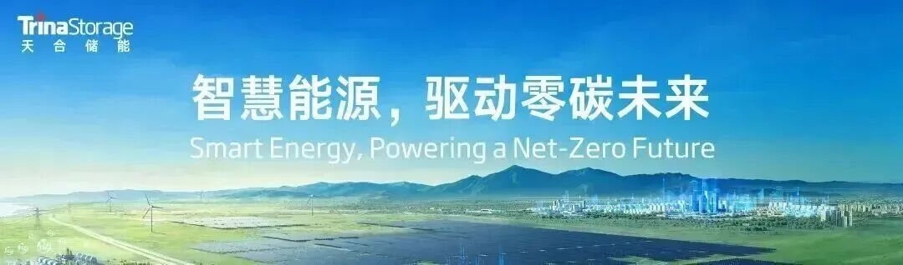
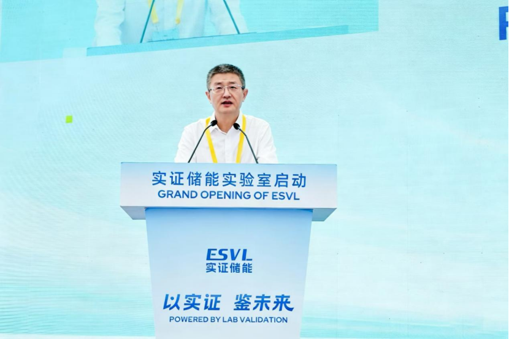
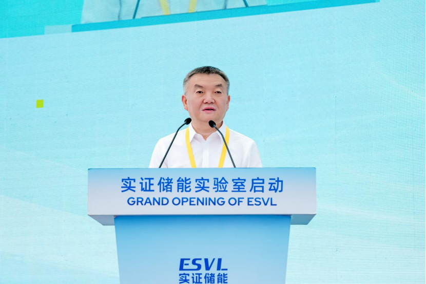
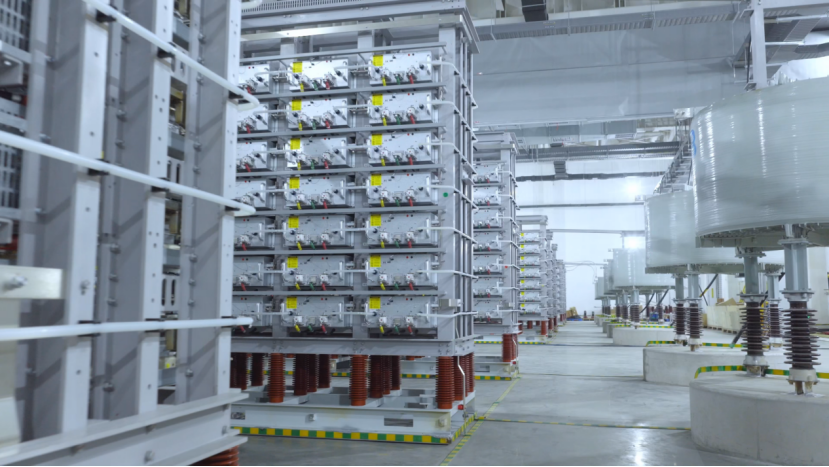
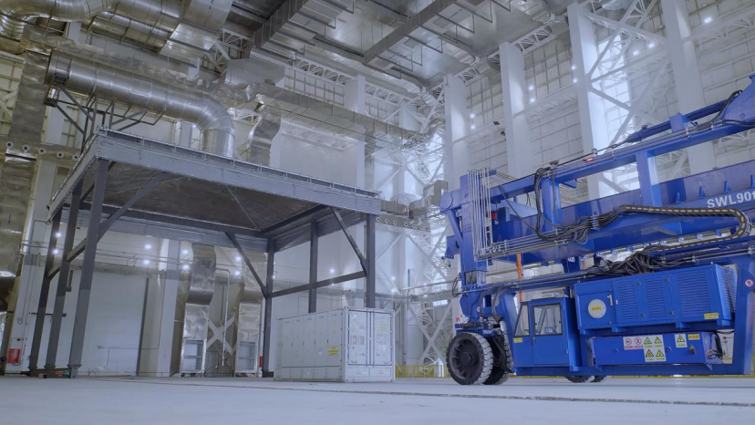
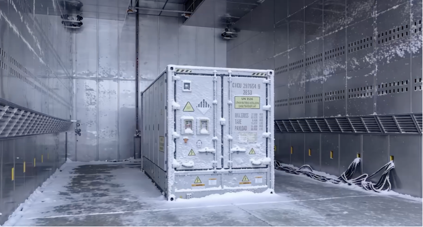
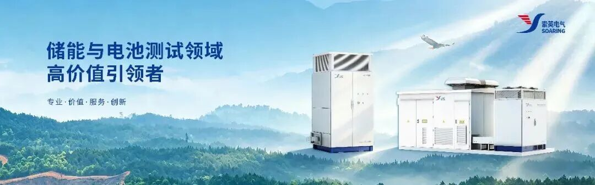
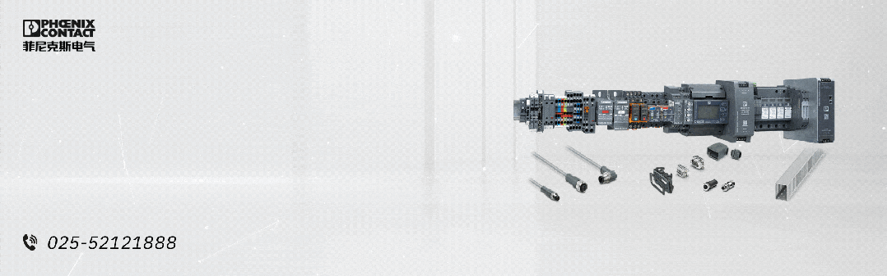
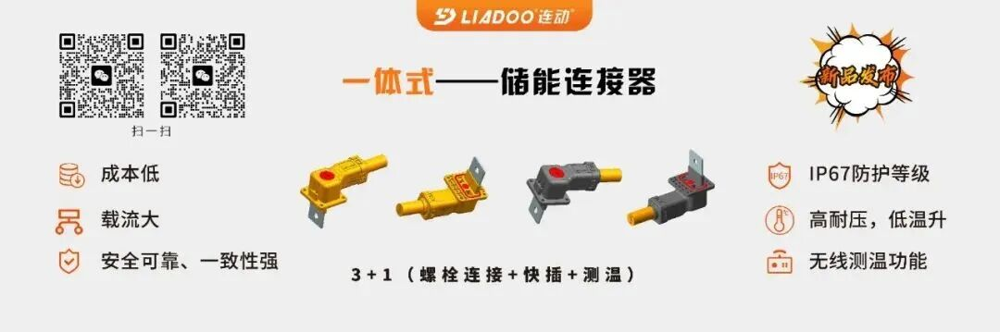

文 | 中关村储能产业技术联盟
2026年5月28日 ，由厦门市政府与宁德时代共建的厦门实证储能科技研究院正式启动。
该研究院总占地150亩、总投资约30亿人民币，是目前全球规模最大、检测能力最完整的储能系统全场景一站式检测与实证平台。
研究院面向全球储能行业开放，定位为行业共享的基础设施。这标志着储能行业告别“非实证”的不确定性，正式迈入“实证型时代”。
启动仪式上，中国工程院院士、宁德时代首席科学家吴凯，中国工程院院士、国网湖南省电力有限公司电网防灾减灾全国重点实验室主任陆佳政，厦门市政协党组副书记黄晓舟，中国电力科学研究院首席技术专家惠东，中国西电电器党委副书记、总经理朱琦琦等多位代表共同出席。出席嘉宾包括了来自政府相关部门、国内外电网、能源与发电集团、储能及新能源企业、金融投资与保险机构、国际认证机构和科研院所，贯通储能全产业链上下游。
“储能产业正式迈入「实证型时代」。”吴凯院士指出，当前，储能电站规模迅速迈入“吉瓦级”，这也向验证体系提出了新的考题。他表示，研究院要做的，是把行业质量标准从零件层面上移到整站层面，把验证节点从投运之后前移到交付之前，主动在实验室里创造最恶劣的工况，全方位拷问从系统到整站的可靠性，终结电网与业主对储能设备不确定性的焦虑，让储能行业进入可信、可持续的实证型时代。

（中国工程院院士、宁德时代首席科学家吴凯）
“实证型储能”由宁德时代此次提出并率先落地。厦门实证储能科技研究院院长陈小波介绍，“实证型储能”以全尺寸、整站为检验单元，在最接近真实场景、真实电网、真实运行工况的条件下给予系统性验证。这正是为了补上一块长期被忽视的行业短板——"装备研发、应用场景试验与检测体系三者并不闭环，缺少大容量、全尺寸整机的安全与并网实证"。“这不是在做测试项目的简单加法，”陈小波说，“我们主动还原电网最严酷的极端工况，把储能电站作为一个有机整体来检验，让储能成为电网可信的基础设施，业主优质的能源资产。“
陆佳政高度肯定“实证型储能”的意义。他指出，电网的安全，从来不是靠推演出来的，而是靠真实场景下的数据与经验积累的。凡是经不起真实场景检验的技术，终究无法托付于电网。厦门市政协党组副书记黄晓舟代表市委市政府致辞指出，“实证型储能”与国家“十五五”规划将新型储能提升至战略性新兴支柱产业的方向高度契合。

（中国工程院院士、国网湖南省电力有限公司电网防灾减灾全国重点实验室主任陆佳政）
厦门实证储能科技研究院由五大创新实验室构成，创下多项全球第一：电网并网实验室是全球首个站域级运行检测与实证实验室，配备35kV/100MVA电网模拟器与实时仿真器，可同时为10台以上大型储能集装箱开展涉网测试，可以模拟1000节点拓扑级别电网，相当于千万千瓦级新能源基地的主网复杂度，兼容15至60Hz宽频率覆盖国内外主要电网标准；高压安全实验室测试范围覆盖1kV至500kV，能在极端高压环境下追溯设备起火爆炸的真实机理，从根源指导设备实现“不起火、不爆炸”。

（并网试验室）
热安全与燃烧实验室则是全球首个配备20MW量热仪的大型室内燃烧设施，10万立方米室内燃烧空间可同时进行9个大型储能集装箱的爆燃测试；电磁兼容实验室，具备全球唯一可支持40尺集装箱整机入舱、配备65吨转台与5MW电源、并在大功率充放电真实工况下的电波暗室内完成EMC测试的专业实验室。

（热安全与燃烧实验室）
环境适应性实验室配备气候舱、环境舱、盐雾舱、淋雨舱及沙尘舱五大专业测试设施，可对整机储能集装箱进行从-50°C到100°C极端温度、最高7200m高海拔高原气压环境及全等级防尘防水等系统级极端环境验证。

（环境适应性实验室）
与会嘉宾指出，当GWh级电站成为常态，当前的部件与现场测试应当更进一步，以构建对电站资产运营状态的更精准预判能力。实证储能已经与TÜV南德、TÜV莱茵、CSA、鉴衡等全球主流认证机构合作，将持续向全行业开放，输出整站级实证标准。
相关阅读
48家投标！华能4GWh储能框采：华能清能院/南瑞继保/亿纬/海辰/中车株洲所/海博思创/阳光电源等入围
3年60GWh！海博思创、宁德时代达成全球最大钠离子电池合作




联盟官微
关注政策、项目、企业、市场活动
联盟官方小秘书
入会、入群、产业交流、活动对接